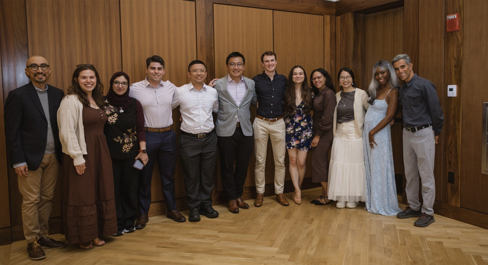
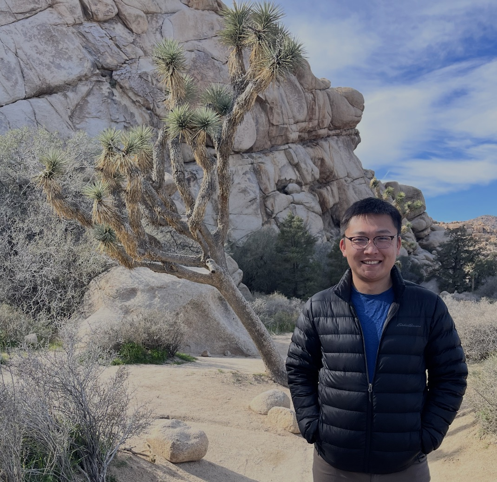
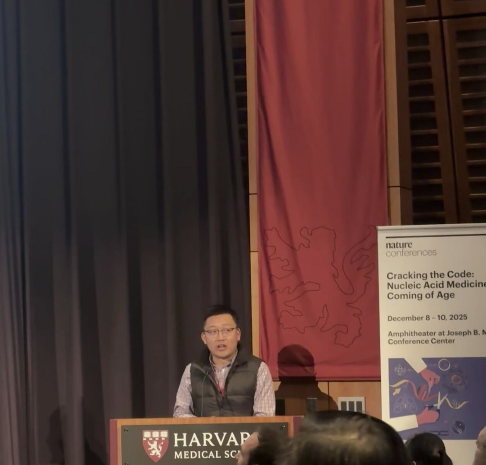

Tong Wang, MD, PhD
About

Hi, I'm Tong. I'm a physician-scientist at Stanford Pathology. I am most passionate about translating basic research into innovative diagnostics. I am currently in the Greenleaf Lab, where I am applying deep learning and chemical biology to understand epigenetics.
Projects
beCasKAS
At least 19 ongoing clinical trials use CRISPR base editors. We invented a technology to sensitively detect their off-targets in cells. We additionally show how non-coding edits can be triaged for epigenetic dysregulation using deep learning.
Wang T, Jessa S, Marinov GK, Klemm S, Kundaje A, Greenleaf WJ. Sensitive, direct detection of non-coding off-target base editor unwinding and editing in primary cells. bioRxiv 2025.
DM-Seq
Direct Methylation Sequencing (DM-Seq) is a fully enzymatic sequencing method that detects 5-methylcytosine (5mC) at single-base resolution. This work represents the technological foundation of two patents and a pre-seed diagnostic company ACE Genomics Inc. DM-Seq has been highlighted here by the NIH NHGRI Technology Development Coordinating Center.
Wang T, Fowler JM, Liu L, Loo CE, Luo M, Schutsky EK, Berríos KN, DeNizio JE, Dvorak A, Downey N, Montermoso S, Pingul B, Nasrallah M, Gosal W, Wu H, Kohli RM. Direct enzymatic sequencing of 5-methylcytosine at single base resolution. Nature Chemical Biology 2023. 19, 1004–1012.
5cxmC
I discovered the new DNA base 5-carboxymethylcytosine (5cxmC) for the first time. Unexpectedly, I found that only a single point mutation in an endogenous methyltransferase safeguards the E. coli genome from creating 5cxmC from the trace metabolite carboxy-SAM (CxSAM). This novel DNA modification was later found by independent groups in naturally occurring viral genomes.
Wang T and Kohli RM. Discovery of an Unnatural DNA Modification Derived from a Natural Secondary Metabolite. Cell Chemical Biology. 2021, 28, 1-8.
News
| Jun 2026 | And that's a wrap. Congratulations to all of my Stanford co-residents! |  |
| Jan 2026 | I had a great time meeting new friends and catching up with my old Kohli labmates at Deaminet in Palm Springs. Our beCasKAS method was highlighted here by Addgene along with many other amazing projects. |  |
| Dec 2025 | Thank you to Nature Conferences for allowing me the opportunity to share beCasKAS. It was a privilege to meet so many inspiring leaders in the exciting field of nucleic acid therapeutics! |  |
| Jun 2025 | Congratulations to Georgi on his preprint using the dsDNA deaminase CseDa01 for single-molecule footprinting! | |
| Oct 2024 | Our fungal PCR diagnostic stewardship study is published in Clinical Infectious Diseases. |